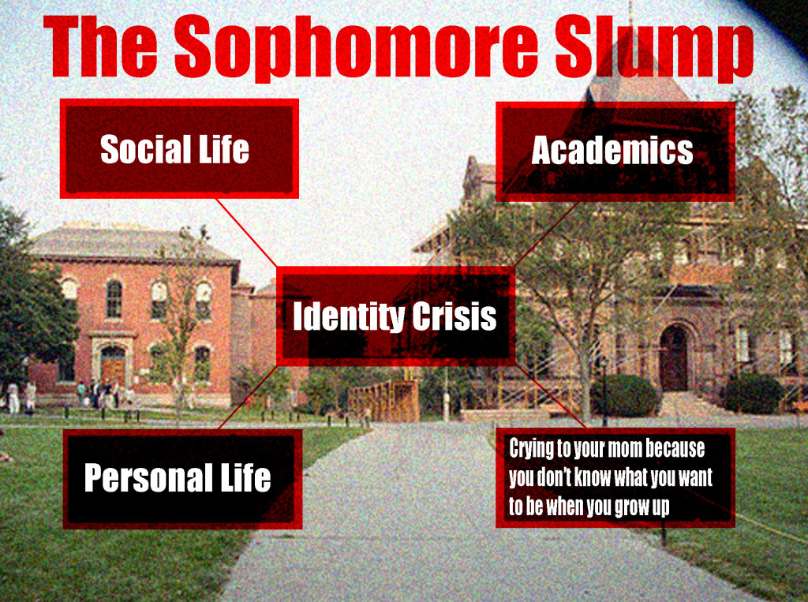

Sophomore year is very difficult because you think you have the rhythm of balancing classes and social life. It’s also difficult because you're not as excited about the school since you have already experienced it. Sophomore year might make you feel lost and out of place. This year can also make you question yourself; this is called “Sophomore Slump”. It is perfectly fine to go into Sophomore year expecting that you will be so organized, balanced, and prepared. However, it has been a while since you went through freshman year. Keep in mind that every year is different and therefore requires different skills and preparation.
During SLump Year you often feel the need to give up on work. You are at that year where you are no longer the "baby" of the school nor are you the eldest either. During Slum Year, you start to notice your grades dropping. You are no longer as excited as you were freshmen year. Your group of friends are dwindling. Everything seems to be at a stand still. -----All these feelings are normal;however,there are many ways to avoid Slump year

During Sophomore slump students should try to get in touch with their feeling, fight through it. Mental Health is very important sophomore year. Take the time out of your day to check in with yourself. Ask yourself; "Am I Happy","Am I getting enough sleep", "What can I do to better myself?".